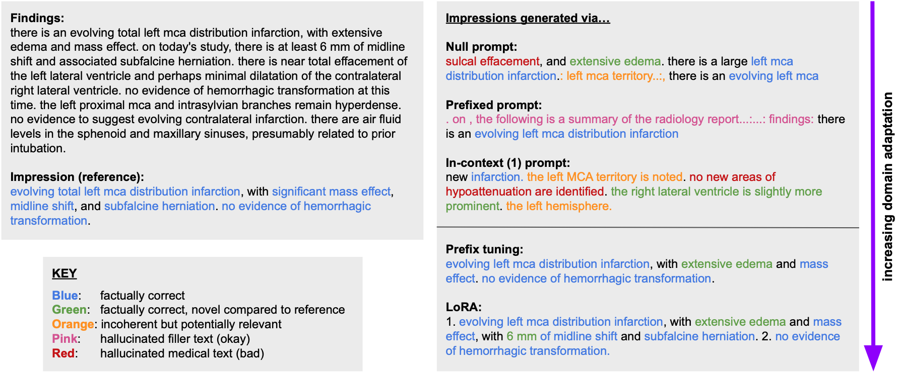
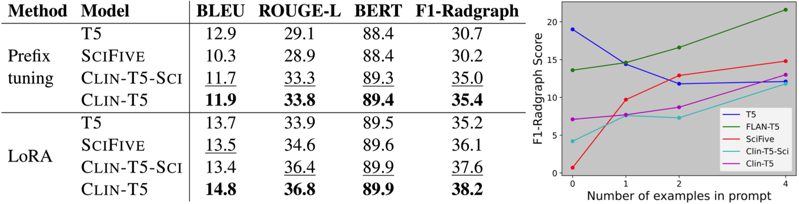
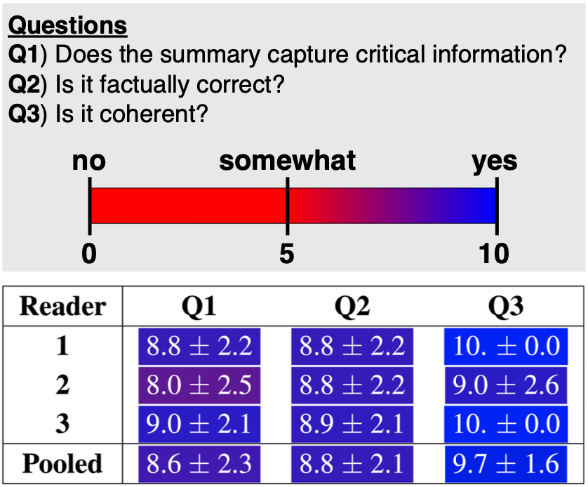
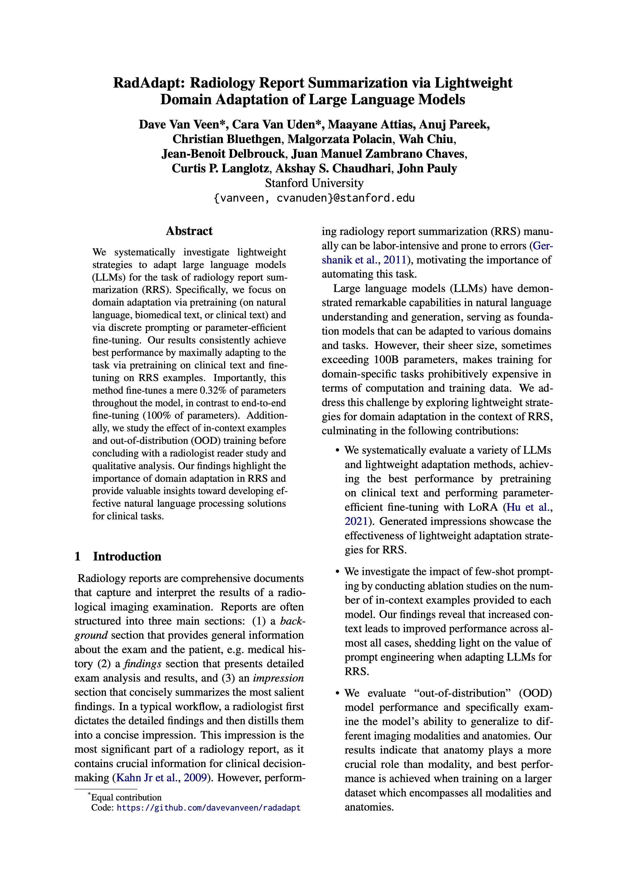

|
Van Veen* |
Van Uden* |
Attias |
Pareek |
|
Bluethgen |
Polacin |
Chiu |
Delbrouck |
|
Chaves |
Langlotz |
Chaudhari |
Pauly |
Stanford University
ACL BioNLP (oral) - 2023
|
|
|
|
|
|
|
We systematically investigate lightweight strategies to adapt large language models (LLMs) for the task of radiology report summarization (RRS). Specifically, we focus on domain adaptation via pretraining (on natural language, biomedical text, or clinical text) and via discrete prompting or parameter-efficient fine-tuning. Our results consistently achieve best performance by maximally adapting to the task via pretraining on clinical text and fine-tuning on RRS examples. Importantly, this method fine-tunes a mere 0.32% of parameters throughout the model, in contrast to end-to-end fine-tuning (100% of parameters). Additionally, we study the effect of in-context examples and out-of-distribution (OOD) training before concluding with a radiologist reader study and qualitative analysis. This research highlights the importance of domain adaptation in RRS and provides valuable insights toward developing effective natural language processing solutions for clinical tasks. |
|  |
|
| Example radiology report. Left: Findings and reference impression. Right: Generated impressions with various methods for discrete prompting (top) and parameter-efficient fine-tuning (bottom), all using the CLIN-T5 model. Color annotations were provided by a radiologist who specializes in the relevant anatomy (head). |
|  |
|
| Domain adaptation. Left: Adaptation via pretraining on increasingly relevant data (T5, SCIFIVE, CLIN- T5-SCI, CLIN-T5) generally leads to improved performance for both fine-tuning methods. See Table 5 in the appendix for comprehensive results. Right: Adaptation via increasing number of in-context examples leads to improved performance in most models. |
|  |
|
| Radiology reader study. Top: Study design. Bottom: Results via CLIN-T5 + LoRA on random samples from the CT head dataset. The model scores highest in coherence (Q3) and generally performs well capturing critical information (Q1) in a factually correct way (Q2). Each entry’s highlight color corresponds to its location on the color spectrum. |
|  | D. Van Veen*, C. Van Uden*, M. Attias, A. Pareek, C. Bluethgen, M. Polacin, W. Chiu, J.B. Delbrouck, J.M.Z. Chaves, C.P. Langlotz, A.S. Chaudhari, J. Pauly RadAdapt: Radiology Report Summarization via Lightweight Domain Adaptation of Large Language Models 2023. (hosted on ArXiv) |
AcknowledgementsThis work is a continuation of the radiology report summarization track at ACL BioNLP. We received support from NIH contracts 75N92020C00008 and 75N92020C00021. |